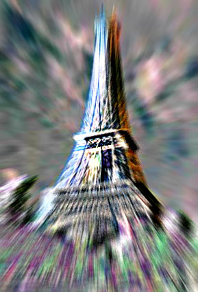
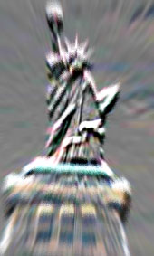

Isn't
that appalling? This morning, all matter on our planet suddenly changed into a
very different kind of stuff. The changes are quite radical. For one thing,
our bodies have just ceased to exist.
Quarks
come in different `flavors'. There's `up' quarks, and `down' quarks, and `strange' quarks. The nuclei of atoms are made of just the
right mix of just the right quarks. Matter ultimately is made of `up' and
`down' quarks.
But
other mixtures are possible too. In the first moments after the Big
Bang, there also was stuff made of `up', `down' and `strange' quarks. It was a
completely different kind of stuff than what we're used to. Appropriately,
scientists call it strange matter.
But
as the universe expanded, strange matter vanished -- although some chunks of strange matter (called `S-curves') may still be out there
somewhere. One thing's for sure, though: no human has ever actually spotted a
single speck of strange matter.
Oh,
but that can change. In recent years, quantum physicists have tried hard to
imitate the earliest moments of the Universe. That sounds more difficult than
it is: the only thing you have to do, basically, is to slam two particles at
tremendous speed head-on into each other. And that's exactly what they do at
huge particle accelerators such as those at CERN in Geneva or the
`Relativistic Heavy Ion Collider' (RHIC) at Brookhaven National Laboratory in
New York.
You already feel what showed up this morning. Strange matter, my friend. LOTS of it.

In a particle accelerator experiment, a tiny bit of strange matter suddenly popped into existence. Against all expectation, it had a negative charge. The next moment, it engaged into a chain reaction theoretical physicists call `Ice-9 Type Transition'.
Sure,
the lump of strange matter that showed up was incredibly small. But that
changed within moments, as the `strangelet' began gobbling up all positively
charged atomic nuclei it encountered, forming more strange matter. The blob
grew and grew, eating the accelerator, the building around it, and the town
around the building. It turned everything it encountered into more atom-eating
strange matter. It was ice-9 at its best. Within seconds, our entire planet
including everything on it became a strange matter planet.
Does that, er... matter? Oh man, you just don't wanna know. All conventional atoms ceased to exist this morning. And in case you forgot, everything we know of, including us, is made of atoms. What's worse, strange matter particles are equally charged, making them want to go away from each other as far as possible, like the equally charged sides of a magnet. Simply put, all matter on the planet has fallen apart this morning. The world went boom, or whatever the sound was.
Well
alright, I'll admit it. Of course, nothing really happened today. I wouldn't
be writing this if it had. But could it happen tomorrow? Or next week, next
year?
Here's
some reassurance: strange matter is so unstable, it simply wouldn't have time
to consume nearby atoms. What's more, strange matter probably has a positive
charge. And positively charged strangelets aren't very dangerous. They would
have an appetite for electrons, sure, but this wouldn't bring about a chain
reaction. The strangelet would simply snatch away a few electrons from
surrounding atoms, and that would be it.
Would, probably, perhaps. Actually, no one knows for sure. As I already
mentioned, no human being has ever studied a chunk of strangeness. And if
scientific history has made one thing clear, it should be that reality often
defies theory. As the Russian theorist Lev Landau once put it: `Cosmologists
are often wrong, but never in doubt.'
Strange,
don't you think?
 |
 |